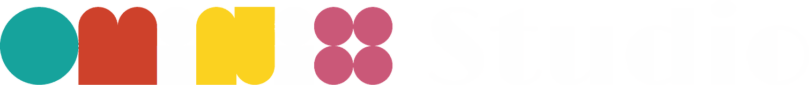
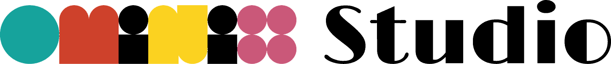
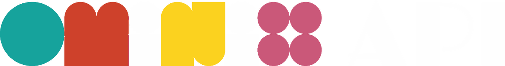
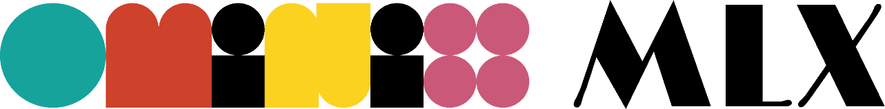

与前沿开源模型对话
Qwen3、GLM-4、Mixtral、Gemma 4、MiniCPM 等，通过即插即用的 OpenAI API 流式输出。
用三条要点总结这次会议。
• 周五发布 v0.4 • 昇腾构建接入 CI • 为主题演讲准备语音演示
45tok/s · Qwen3-4BPOST /v1/chat/completions
在本地运行大模型、生成图片、克隆声音、转写语音。纯 Rust 实现，零 Python 依赖，兼容 OpenAI API。
$ curl -fsSL https://raw.githubusercontent.com/OminiX-ai/OminiX-API/main/install.sh | sh每种模态都有自己的颜色，取自 Logo。你会在全站的标签、图表和接口上反复看到它们。
Qwen3、GLM-4、Mixtral、Gemma 4、MiniCPM 等，通过即插即用的 OpenAI API 流式输出。
FLUX.2-klein 和 Z-Image-Turbo 跑在 Metal 上。下面两张图都在本机生成。

这里的每段音频都是 OminiX-API 调用 Qwen3-TTS 的真实输出，在 Apple M4 Pro 上以快于实时的速度生成。选一个音色，点击播放。


基于 Makepad 的原生桌面应用。聊天、图像、语音，可连接本地或云端后端。

兼容 OpenAI 的 HTTP + WebSocket 服务。模型热切换，GPU 显存共享。

Apple MLX 的安全 Rust 绑定，外加覆盖 LLM、ASR、TTS、VLM、OCR 和图像生成的模型 crate。
22 个 Rust crate，首次使用时自动下载并缓存在本地。需要什么就加载什么，不用的随时卸载。
| OminiX | Ollama | LM Studio | |
|---|---|---|---|
| 声音克隆 | 支持 | 不支持 | 不支持 |
| 图像生成 | FLUX、Z-Image | 不支持 | 不支持 |
| OpenAI API | 完整兼容 | 部分兼容 | 部分兼容 |
| 运行时 | 纯 Rust | Go + C++ | Electron + C++ |
# 1 · 安装 curl -fsSL https://raw.githubusercontent.com/OminiX-ai/OminiX-API/main/install.sh | sh # 2 · 启动服务 ominix-api # 3 · 对话 curl localhost:8080/v1/chat/completions \ -d '{"model":"qwen3","messages":[{"role":"user","content":"你好！"}]}'